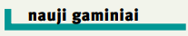
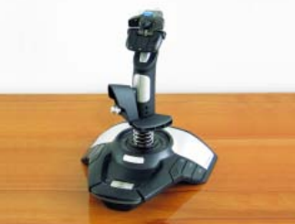
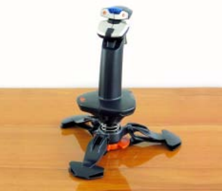

<!DOCTYPE html>
<html lang="en" dir="ltr">
  <head>
    <link rel="stylesheet"  href="styles.css">

    <meta charset="utf-8">
    <title>8 LABORATORINIS</title>

  </head>
  <body>
    <style>
.content {
  max-width: 800px;
  margin: auto;
}
</style>
    <div class="content">
<!---------------------------------------------------------->
<!---------------------------------------------------------->
<style>


.header {
  overflow: hidden;
  background-color: #f1f1f1;
  padding: 20px 10px;
}

.header a {
  float: left;
  color: black;
  text-align: center;
  padding: 12px;
  text-decoration: none;
  font-size: 18px;
  line-height: 25px;
  border-radius: 4px;
}

.header a.logo {
  font-size: 25px;
  font-weight: bold;
}

.header a:hover {
  background-color: #ddd;
  color: black;
}

.header a.active {
  background-color: dodgerblue;
  color: white;
}

.header-right {
  float: right;
}

@media screen and (max-width: 500px) {
  .header a {
    float: none;
    display: block;
    text-align: left;
  }

  .header-right {
    float: none;
  }
}
</style>
</head>
<body>


<math display="inline">
  <msup>
    <mi>e</mi>
    <mn>x</mn>
  </msup>
  <mo>=</mo>
  <mn>1</mn>
  <mo>+</mo>
  <mfrac>
    <mn>x</mn>
    <mn>1!</mn>
  </mfrac>
  <mo>+</mo>
  <mfrac>
    <msup>
      <mi>x</mi>
      <mn>2</mn>
    </msup>
    <mn>2!</mn>
  </mfrac>
  <mo>+</mo>
  <mfrac>
    <msup>
      <mi>x</mi>
      <mn>3</mn>
    </msup>
    <mn>3!</mn>
  </mfrac>
    <mo>+ ... ,  </mo>
    <mn>-∞ &#60; x &#60; ∞</mn>
</math>

<div class="header">
  <a href="#default" class="logo">

  </a>
  <div class="header-right">
    <a class="active" href="#home">Pagrindinis</a>
    <a href="#contact">Kontaktai</a>
    <a href="#about">Apie</a>
  </div>
</div>


<!---------------------------------------------------------->
<!---------------------------------------------------------->
<div class="lentele">
<style media="screen">

table, th, td {
border: 1px solid black;
border-collapse: collapse;
}
</style>
<table border="1">
<tr>
<td colspan="7">Bandymų rezultatai    </td>
</th>
<tr>
<th rowspan="3" >Nešiojamas kompiuteris </th>
<th colspan="3">Bapco Mobile Mark 2002  </th>
<th rowspan="3">PC Marko4 PRO**</th>
<th rowspan="3">3D Mark 2001 SE**</th>
<th rowspan="3">3D Mark 2003**</th>
<tr></tr><th a>Našumas</th><th a>vidutinė rekcijos trukmė</th><th a>Baterijos veikimo trukmė</th>
</tr>
<tr>
<td>Atomik Action DAT23 </td><td>173</td><td>1,14 sek.</td><td>171 min.</td><td>2826</td><td>6767</td><td>912</td>
</tr>
<tr>
<td>Magnum Book M620DC</td><td>170</td><td>1,16 sek.</td><td>214 min.</td><td>2949</td><td>9792</td><td>2643</td>
</tr>
<tr>
<td>Sedum CL56</td><td>171</td><td>1,15 sek.</td><td>237 min.</td><td>2905</td><td>9561</td><td>2745</td>
</tr>
<tr>
<td colspan="7"><i> Kompiuteris buvo maitinamas baterija. ** Kompiuteris buvo prijungtas prie išorinio maitinimo šaltinio. </i>    </th>
</td>
</table>
</div>
<!---------------------------------------------------------->
<h1>Naujos <span>„Saitek“</span> vairalazdės
</h1>
<style>
.newspaper {
  column-count: 3;
}
</style>


<div class="newspaper">
  apvadas, du pelòs klavi‰us atstojantys mygtukai.
  ·io kompiuterio informacijos ∞vesties ir
  i‰vesties sistema ∞tiks kiekvienam kompiuteri˜ vartotojui: VGA, lygiagretusis, „S-Video“ (TV i‰vestis), infraraudon˜j˜ spinduli˜, tinklo, modemo, PCMCIA plok‰tòs, trys
  USB 2.0 ir IEEE 1394 prievadai.
  Ø „Sedum CL56“ ∞diegta ∞prasto dydÏio
  85 klavi‰˜ klaviatra (‰e‰i˜ valdymo klavi‰˜ („PgUp“, „PgDn“, „Home“, „End“,
  „Insert“ ir „Delete“) funkcijos atliekamos
  paspaudus „Fn“ ir vienà raidÏi˜ mygtukà).

  <p><b>A. Vaičiūno nuotraukos</b></p>

</div>
<div class="pavadinimas">


</div>

<!---------------------------------------------------------->
<!---------------------------------------------------------->
<!---------------------------------------------------------->
<div class="wrapper">

  <div class="two">
<!---------------------------------------------------------->
<!---------------------------------------------------------->
<!---------------------------------------------------------->
<div class="lentele2">


<table border="0">
    <td lol>
      <ul>
        <b>Saitek Cyborg EVO</b><br>
        <i style="color:green;">Privalumai:</i>
        <li><i>konkurencinė kaina </li>
        <li>daug valdymo mygtukų</li>
        <li>patogu reguliuoti</li>
        <i style="color:red;">Trūkumas:</i>
        <li>neįdiegta atoveikio funkcija </li>
        <b>Kaina</b> 109 litai<br>
        <b>Bendrovė</b> ,,BMS kompiuteriai"
        </i>
      </ul>
  </td>
  <th></th>
</tr>
<tr>
  <td lol>
          <ul>
            <b>Saitek ST90</b><br>
            <i style="color:green;">Privalumai:</i>
            <li><i>konkurencinė kaina </li>
            <li>originalios konstrukcijos stovas</li>
            <li>skaitmeniniu būdu galima keisti variklio apsukas</li>
            <i style="color:red;">Trūkumai:</i>
            <li>mažai valdymmo mygtukų </li>
            <li>negalima reguliuoti </li>
            <b>Kaina</b> 50 litų<br>
            <b>Bendrovė</b> ,,BMS kompiuteriai"
            </i>
          </ul>
    </td>
  <td></td>
</tr>
</table>
</div></div>
<div class="one">
  <p><b>„Saitek Cyborg EVO“</b></p>
  „Saitek Cyborg EVO“ — USB sàsaja jungiama vairalazdò, kurioje ∞rengta dvylika
mygtuk˜, keturios a‰ys ir a‰tuoni˜ padòãi˜
svirtelò (hat). ·iuo ∞taisu valdant skrydÏio
imitatori˜, „X“ kryptimi galima keisti skrydÏio auk‰t∞, „Y“ kryptimi — posvyrio aplink
i‰ilgin´ a‰∞ kampà (valdomi lòktuvo eleronai), o sukant vairalazdòs rankenà apie jos
vertikalià a‰∞ — nukrypti ∞ kair´ ar de‰in´.
Variklio apsukoms keisti ‰iame ∞taise
∞rengtas analoginis reguliatorius (throttle).
Kaip ir kit˜ „Saitek“ vairalazdÏi˜, „Cyborg
EVO“ kairiarankiams, ir de‰iniarankiams.
„Saitek Cyborg EVO“ rankenos vir‰uje
esanãiomis dviem rankenòlòmis penki˜ainuoja gerokai maÏiau).
Didelis „Saitek Cyborg EVO“ privalumas — nuimama pla‰takos atrama. Be joki˜ speciali˜ ∞ranki˜ galima pakeisti ‰ios
atramos tvirtinimo auk‰t∞ (galimi trys variantai). Atramà galima pritvirtinti taip,
kad ∞taisu bt˜ patogu naudotis ir kairiarankiams, ir de‰iniarankiams.
„Saitek Cyborg EVO“ rankenos vir‰uje
esanãiomis dviem rankenòlòmis penki˜
mygtuk˜ valdymo skydel∞ galima pasukti ∞ kair´ ir de‰in´, nuleisti arba pak
mygtuk˜ valdymo skydel∞ galima pasukti ∞ kair´ ir de‰in´, nuleisti arba pakelti
</div>
  <div class="three">

      <style media="screen">
        p {text-align: center;}
      </style>

      imitatori˜, „X“ kryptimi galima keisti skrydÏio auk‰t∞, „Y“ kryptimi — posvyrio aplink
      i‰ilgin´ a‰∞ kampà (valdomi lòktuvo eleronai), o sukant vairalazdòs rankenà apie jos
      vertikalià a‰∞ — nukrypti ∞ kair´ ar de‰in´.
      Variklio apsukoms keisti ‰iame ∞taise <p><b>„Saitek Cyborg EVO“</b></p>
      svirtelò (hat). ·iuo ∞taisu valdant skrydÏio
      imitatori˜, „X“ kryptimi galima keisti skrydÏio auk‰t∞, „Y“ kryptimi — posvyrio aplink

    </div>
    <div class="four">

        <style media="screen">
          p {text-align: center;}
        </style>


        Didelis „Saitek Cyborg EVO“ privalumas — nuimama pla‰takos atrama. Be joki˜ speciali˜ ∞ranki˜ galima pakeisti ‰ios
        atramos tvirtinimo auk‰t∞ (galimi trys variantai). Atramà galima pritvirtinti taip,
        kad ∞taisu bt˜ patogu naudotis ir kairiarankiams, ir de‰iniarankiams.
        „Saitek Cyborg EVO“ rankenos vir‰uje
        esanãiomis dviem rankenòlòmis penki˜
        mygtuk˜ valdymo skydel∞ galima pasukti ∞ kair´ ir de‰in´, nuleisti arba pakelti

        <p><b>A. Vaičiūno nuotraukos</b></p>
      </div>
</div>
<!---------------------------------------------------------->
<footer>
  <div><button onClick="window.print()">Print this page</button></div>
  <p>Author: Elizabeta Martinaityte EAf-21<br>
  <a href="mailto:webmaster@example.com">Email</a>
</footer></div>
  </body>
</html>
